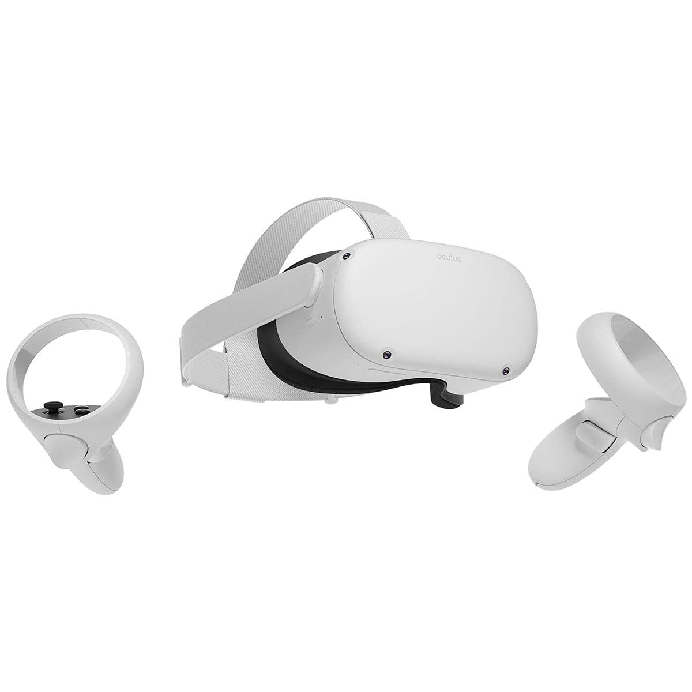
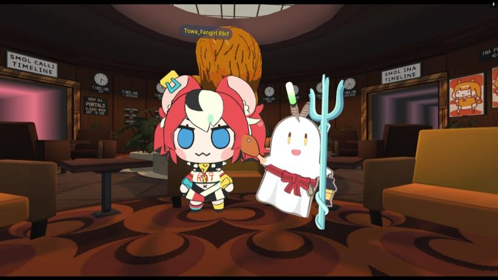

introduccion
la realidad extendida abarca muchos temas y contenido y sirve de muchas cosas pero esta ves nos fijaremos en dos, vr (realidad virtual) y conciertos virtuales donde en cada uno se explicara y se daran ejemplos para una idea mas clara de que van y como funcionan
vr (realidad virtual)
iniciemos con el tema de vr entoces que es es vr? La Realidad Virtual es una tecnología que crea un entorno simulado que puedes ver y explorar como si estuvieras dentro de él, usando un visor especial como este:
estos se colocan en la cabeza y para que funcionen ocupas una consola o computadora que lo soporte ya que esta tecnologia exige mucho, tambien debes tener algun juego de vr pero aqui hay dos ejemplos:
among us
en este caso este es el famoso videojugo conocido como among us el cual tuvo su version para vr, pero among us de que va? among us es un videojuego multijugador en línea que mezcla estrategia, engaño y trabajo en equipo donde hay un impostor y los demas lo tiene que descubrir o ganarle haciendo tareas pero no es el unico juego vr que hay como ultimo ejemeplo tenemos:
Vr chat
este es otro juego famoso multijugador muy conocido y famoso dentro de este mundo de los videojuegos de vr se llama vr chat donde puedes convivir con mas personas y ser diferentes personajes ya sea un personaje anime (como en la imagen) o romeo santos hay miles de opciones para escoger,como ultimo tambien tenemos entrenamiento en caso que no tengas unos lentes y solo quieres ver videos Relacionados como las vtuber
entrenamiento
dentro del entrenamiento fuera de videojuegos entra tambien las antes mencionadas vtuber pero que son? una vtuber es una persona que crea contenido en plataformas como YouTube, Twitch o TikTok usando un avatar virtual, en lugar de mostrarse con su apariencia real. Estos avatares suelen estar inspirados en el estilo de los personajes de anime existen ya sea de habla hispana y japonesa en este caso sera un ejemeplo de una vtuber japonesa como:
hoshimachi suisei

esta es una vtuber llamada hoshimachi suisei la cual hace musica pero eso lo veremos mas adelante, aparte de ella hay mas vtuber ya que esto no solo se enfoca en una sola.como otro video ejemplo tenemos:
miko y korone
en este caso las que aparecen en el video son unas vtuber de habla japonesa llamadas inugami korone y sakura miko un ejemplo de como funcina un modelo vtuber y ellas estan jugando el juego anterior mente dicho (among us 3D) con sus amigas/compañeras y un ejemplo mas claro de como funciona el juego. pero no acaba ahi tambien hacen canciones y conciertos pero eso lo veremos mas adelante
conciertos virtuales
Que es un concierto virtual? un concierto virtual es un espectáculo musical que se realiza a través de internet, sin un espacio físico tradicional. En lugar de ir a un estadio o auditorio, los fans asisten al concierto desde sus dispositivos, como una computadora, celular o visor de realidad virtual. Este tipo de eventos se han vuelto cada vez más populares, especialmente desde la pandemia, ya que permiten disfrutar de la música en vivo desde casa o desde un entorno digital.Aqui nuevamente entran las vtuber porque ellas hacen conciertos virtuales e incluso tiene cancines originales un ejemeplo de ambos:
en este concierto sale la antes mencionada hoshimachi suisei de un concierto virtual mas una cancion orignal la cual se a hecho muy famosa dentro y fuera de la comunidad vtuber y jpop en general aunque hay mas conciertos virtuales un ejemplo es el de blacpink dentro de roblox donde las chicas se presentaron en el videojuego
en este concierto se dieron objetos virtuales gratis sobre el tema de blacpink sin decir las canciones donde cada artista era un personaje dentro del juego y como estos dos hay mas conciertos virtuales no solo se cierran a eso ya que cada vez es mas facil poder hacer un concierto asi y rentable ya que mucha gente puede disfrutar de los conciertos aunque obviamente hay algunos que son de paga pero en su mayoria son gratuitos y accesibles
conclusion
realidad extendia
la realidad extendida a ayudado a que el mundo se conecte de diferentes formas y aunque solo vimos dos temas hay mas temas e incluso la realidad extendia a ayudado en medicina. la tecnologia junto con la realiad extendia en un futuro podran hacer que las cosas sean mas faciles a este paso tan rapido al que va pero todavia hay que esperar un poco
vr (realidad virtual)
como conclusion de la realidad virtual tenemos que ayuda y entretiene gran canidad de personas y ayuda a la convivencia y el conocer mas personas ya sea en un juego o fuera de como las vtuber y aunque todavia es un poco caro el vr poco se hace mas accesible el poder tener uno de estos lentes en tu casa
conciertos virtuales
los conciertos virtuales ayudan a la gente que no tiene la opoturnidad de ir uno en fisico ya sea por dinero o otros factores,y aunque en su mayoria son en videojuegos poco a poco se esta logrando que sea sin necesidad de uno e incluso algunos los ponen en el cine asi que en un futuro no tan lejano podremos ver todo tipo de conciertos desde nuestras casa